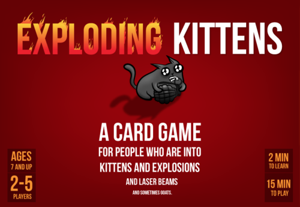

Exploding Kittens
The Featured Party Game!!

Description:
Exploding Kittens is a kitty-powered version of Russian Roulette. Players take turns drawing cards until someone draws an exploding kitten and loses the game. The deck is made up of cards that let you avoid exploding by peeking at cards before you draw, forcing your opponent to draw multiple cards, or shuffling the deck.
The game gets more and more intense with each card you draw because fewer cards left in the deck means a greater chance of drawing the kitten and exploding in a fiery ball of feline hyperbole.
Number of Players:
2 - 5
Best with 4 players
Recommended with 3 - 5 players
Suggested Ages:
8 and up
Playing Time:
15 minutes
Go home, meow